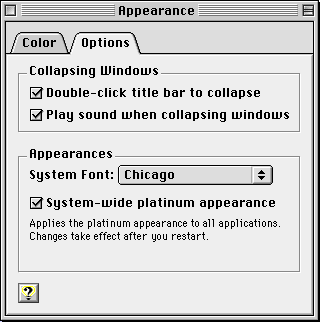
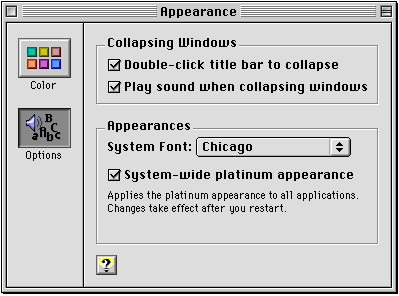
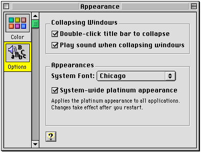
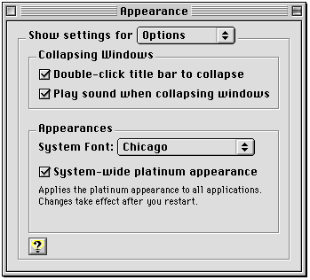

Multi-Pane Windows
If you use a multi-pane modeless dialog box for the control panel window, there are several design options for navigating between individual panels.You should use tab controls if the number of panes is fixed and the control panel has adequate horizontal space to accommodate all the tabs in a single horizontal row. Tab controls can simultaneously and automatically display all choices to the user; they can also display icons in addition to (but not instead of) the text label. However, tab controls use considerable horizontal space and are not as extensible as a scrolling list or pop-up menu. The size of any icon in a tab control is also limited. Figure 6-1 shows the use of tab controls in a multi-pane control panel.
Figure 6-1 Using tab controls to navigate a multi-pane control panel

You can use a group of push buttons if the number of panes is fixed and the control panel has adequate space to accommodate all the buttons and labels in a single horizontal or vertical row. Like tab controls, push buttons simultaneously and automatically display all choices to the user. They can display both text and large or small icons; a button's text label may wrap to a second line, so a group of push buttons may require less horizontal space than tabs. However, push buttons still use considerable horizontal and vertical space. Figure 6-2 shows the use of push buttons in a multi-pane control panel.
Figure 6-2 Using push buttons to navigate a multi-pane control panel

You can use a scrolling list of icons (horizontal or vertical) if the number of panes is indefinite (extensible) and the control panel has adequate space to accommodate the list. A scrolling icon list can display both text and large or small icons. However, scrolling icon lists use considerable horizontal and vertical space, and they require a user action (clicking the scroll bar) to display all choices. Also, the user is unlikely to be able to see all choices simultaneously. Figure 6-3 shows a vertical scrolling list of icons used in a multi-pane control panel.
Figure 6-3 Using a scrolling list to navigate a multi-pane control panel

If no other method is suitable, you can use a pop-up menu. Pop-up menus can display a fixed or indefinite number of control panel panes. Pop-up menus use minimal space and display all choices to the user simultaneously. However, they can display only text and small icons, and they require a user action (clicking on the pop-up menu) to display the choices. In the unlikely--and undesirable--event that a pop-up menu has too many items to display simultaneously (that is, the user must scroll to see them all), you should consider rearranging your control panel or, at worst, dividing the settings into two control panels. Figure 6-4 shows a pop-up menu used in a multi-pane control panel.
Figure 6-4 Using a pop-up menu to navigate a multi-pane control panel

Table 6-1 summarizes the four different ways of navigating multi-pane windows.